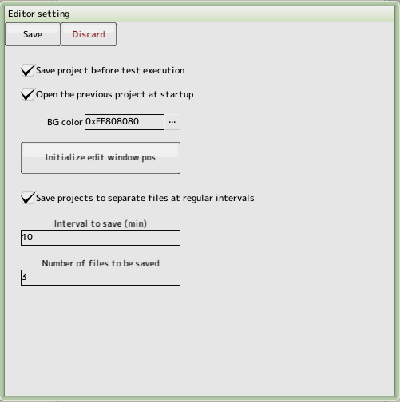

back to the original page
back to the original page

- Save the project before debugging
Automatically overwrite it
- Background Color
This will be the background color of the image preview in sprite editing and background editing
- Initialize the position of the edit window
If the edit window goes off-screen
- Autosave
Saves the project as an alias at a fixed time. Specify interval and number of saves
Back to the top of the page